While the main series only has five entries currently, with a sixth one announced, there are many spin-off games in the Elder Scrolls franchise.
Below are some, but not all, of the notable side entries for Elder Scrolls
An Elder Scrolls Legend: Battlespire
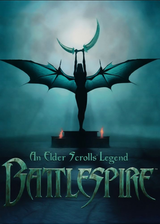
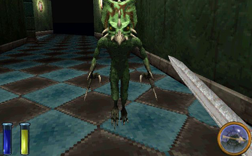
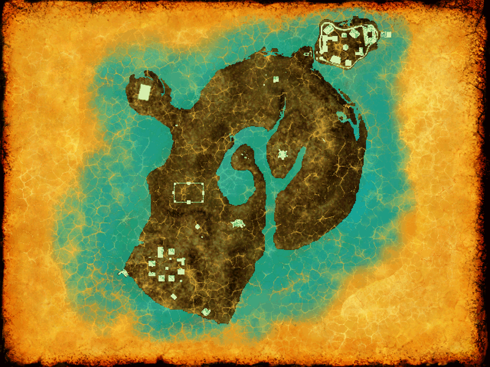
- Release date: 1997
- Platform: MS-DOS
- Engine: XnGine
Synopsis
In Battlespire, you take the role of an aspiring battlemage serving the Empire of Tamriel. As part of your training, you are sent to The Battlespire, located in the perilous realm of Oblivion.
The Elder Scrolls Adventures: Redguard
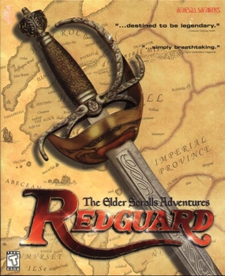
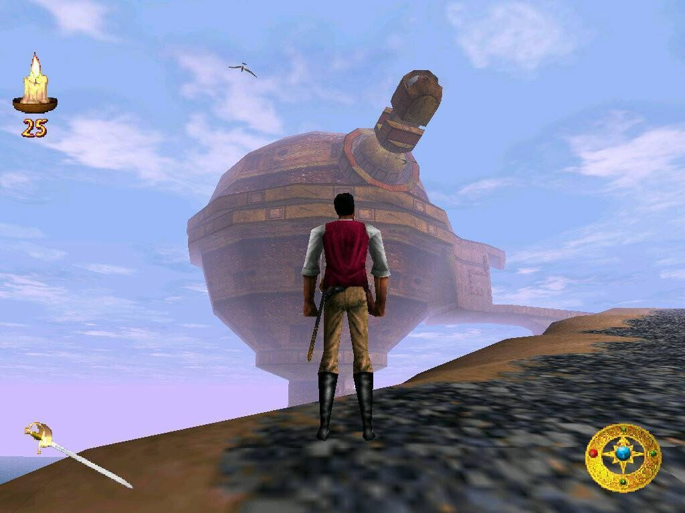

- Release date: 1998
- Platform: MS-DOS
- Engine: XnGine
Synopsis
One of the few Elder Scrolls games in which you play as a named character, The Elder Scrolls Adventures: Redguard has you play as Cyrus, a redguard mercenary under the employ of a Khajiit crime boss named S'rathra.
The Elder Scrolls Online
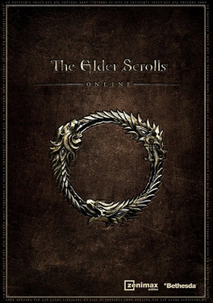
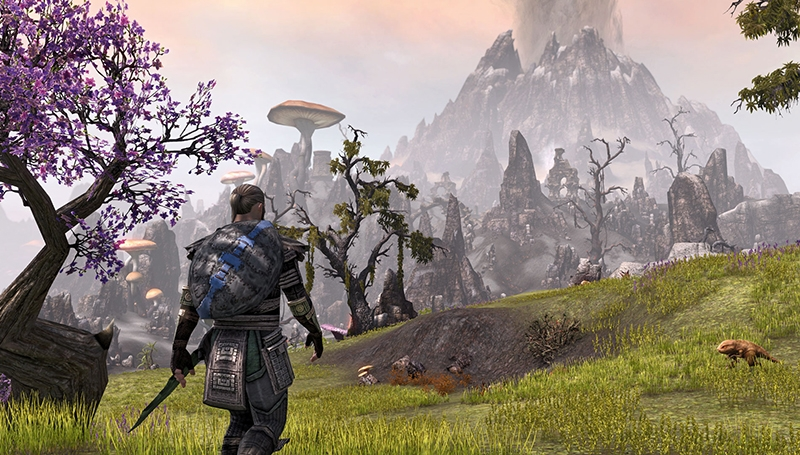

- Release date: 2014
- Platforms: Windows, MacOS, Playstation 4, Playstation 5, Xbox One, Xbox Series X/S
- Engine: Gamebryo
Synopsis
The first multiplayer Elder Scrolls game, The Elder Scrolls online is an MMORPG, similar to games like World of Warcraft or Runescape. In the game, players choose to join one of three factions before exploring the continent of Tamriel.
Elder Scrolls online is still receiving updates and new content to this day, with a large and active community.
The Elder Scrolls: Legends
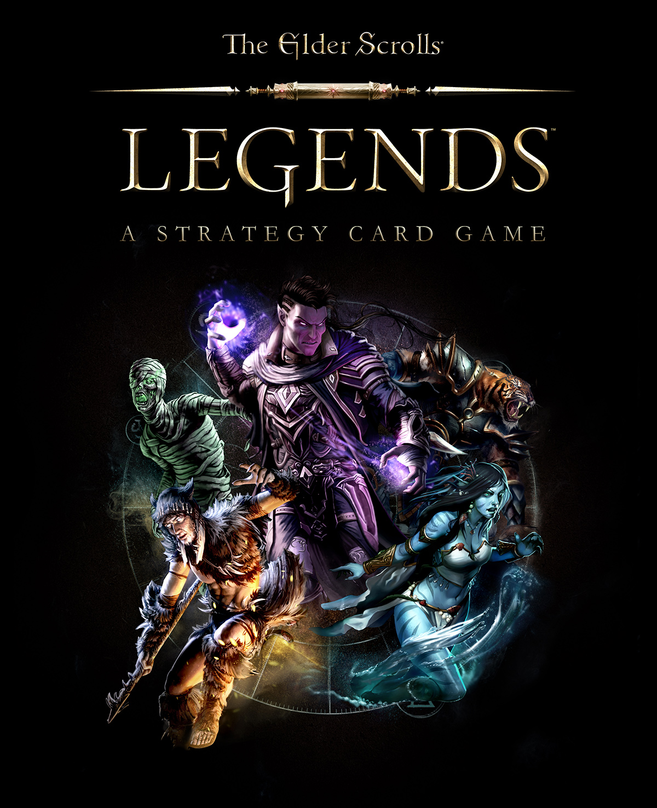
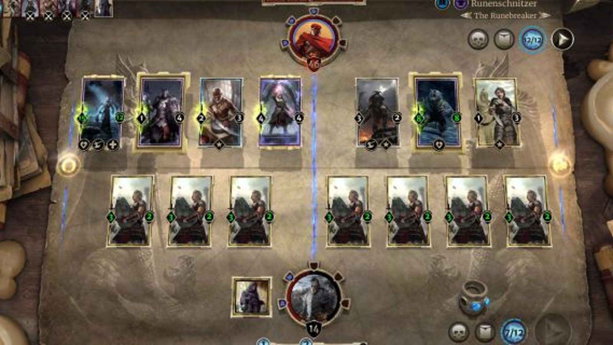
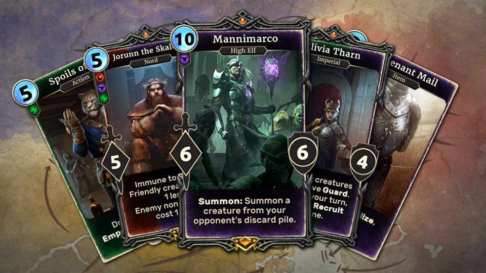
- Release date: 2017
- Platforms: Windows, MacOS, iOS, Android
- Engine: Unity
Synopsis
A free-to-play card game where players could create a custom 'hero' card to lead the rest of their deck and fight other players.
Unfortunately, development was halted in December of 2019, and as of January 30th of 2025 this game is no longer available nor playable.
The Elder Scrolls: Blades

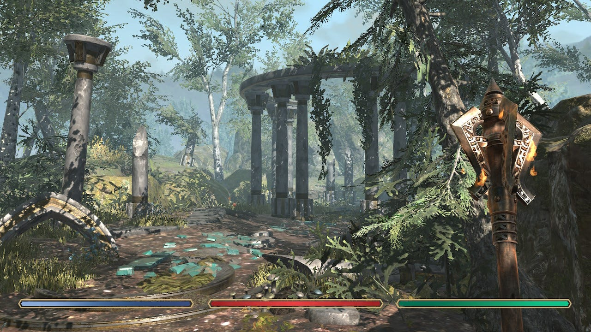
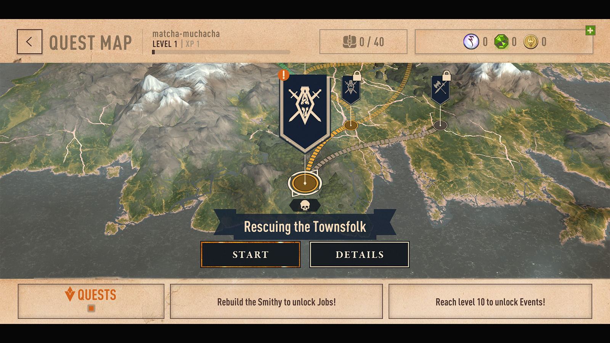
- Release date: 2020
- Platforms: Android, iOS, Nintendo Switch
- Engine: Unknown (Likely Unity)
Synopsis
A version of The Elder Scrolls originally designed strictly for mobile devices, though later released on the Nintendo Switch. This game has a focus on one-on-one combat, where players tap and swipe the screen
to move their weapons around. While most other games in the franchise focus on exploration, this one features linear progression.
The Elder Scrolls: Castles
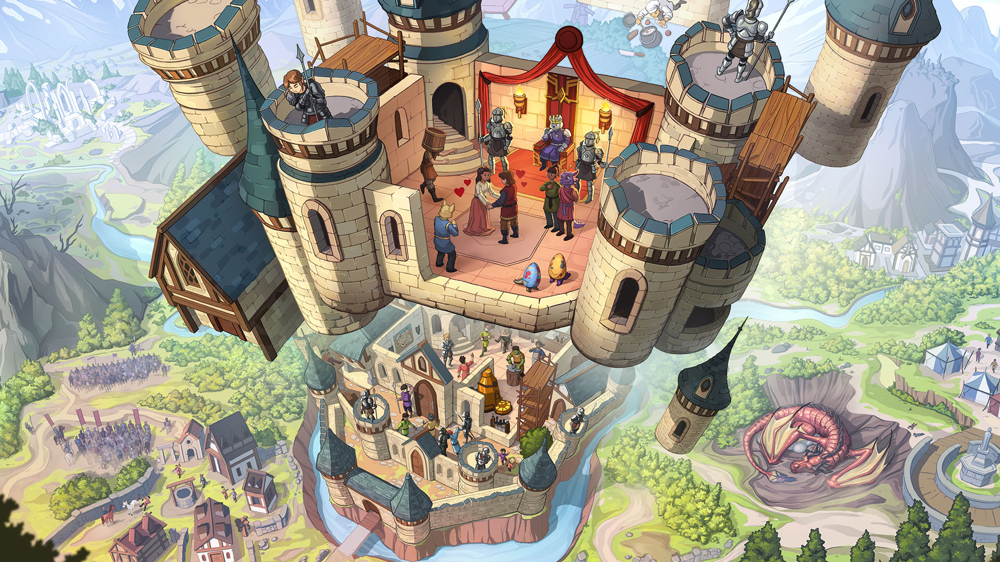


- Release date: 2024
- Platforms: Android, iOS
- Engine: Unknown (Likely Unity)
Synopsis
This game has players managing their own dynasty and castle, while training their subjects and growing their kingdom. It's a very unique game compared to other
Elder Scrolls titles, though is similar to one of Bethesda's other games, Fallout Shelter.